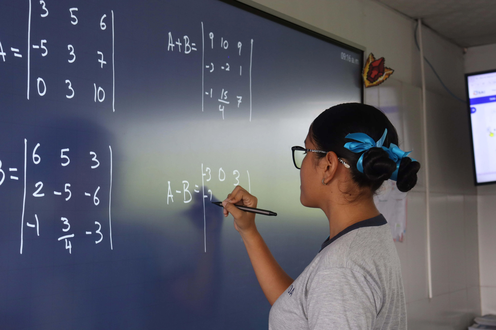
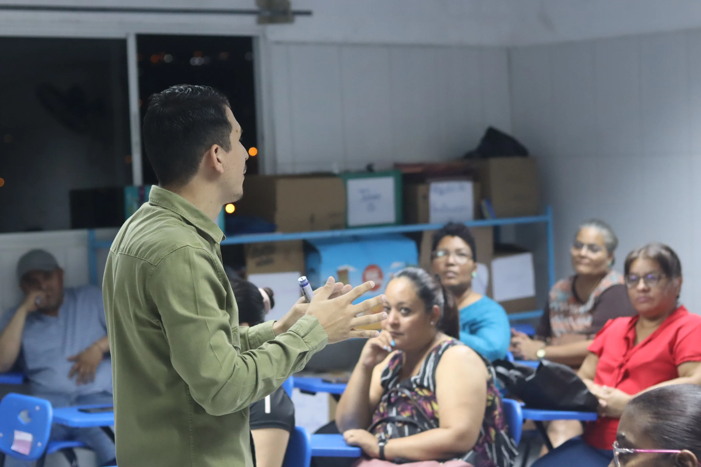
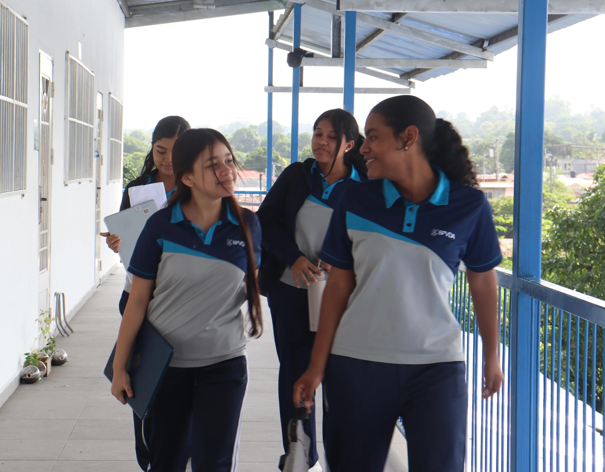

Proceso Simple y Transparente
Tu Camino para Formar Parte de BPVDA
Diseñamos un proceso de admisión cercano y guiado para que tu familia experimente la calidez de nuestro colegio desde el primer día.
Fase 01
100% Online
Solicitud y Registro Digital
Completa el formulario de preingreso en línea con los datos básicos del aspirante para agendar una cita informativa personalizada.
- Formulario breve sin costo inicial
- Atención personalizada vía WhatsApp o llamada
01

Fase 02
Presencial
Visita Guiada y Evaluación Diagnóstica
Conoce las instalaciones, laboratorios y aulas junto a tu hijo. Realizamos una evaluación diagnóstica pedagógica para conocer sus fortalezas.
- Recorrido por áreas académicas y recreativas
- Entrevista con el equipo de orientación
02

Fase 03
Confirmación
Matrícula y Bienvenida a la Comunidad
Entrega de documentación escolar, formalización de matrícula e inducción a la plataforma SAI para iniciar el nuevo ciclo con éxito.
- Acceso a portal de padres y calendario
- Asignación de grupo y paquete de bienvenida
03
